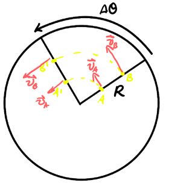

Rotational Motion
Table of Contents
1. Angular Quantities
We can understand the angular quantities by using a metaphor with the translational quantities. The following are the rotational analogues to the translational quantities of displacement, position, velocity, and acceleration:
| Quantity | Translational | Rotational |
|---|---|---|
| Displacement | \(\Delta x\) | \(\Delta \theta\) |
| Position | \(r\) | \(\theta\) |
| Velocity | \(v=\frac{\text{d}r}{\text{d}t}\) | \(\omega = \frac{\text{d}\theta}{\text{d}t}\) |
| Acceleration | \(a=\frac{\text{d}^2r}{\text{d}t^2}\) | \(\alpha =\frac{\text{d}^2\theta}{\text{d}t^2}\) |
The rotational analogues, then, are angular displacement, angular position, angular velocity, and angular acceleration.
1.1. Conversion Between Angular and Linear Quantities
When considering movement around a circle with radius \(R\), we can begin with the arc length formula to determine the position:
\begin{align} \boxed{s = R\theta} \end{align}Taking the derivative with respect to time, we obtain velocity:
\begin{align} \boxed{v = R\omega} \end{align}Substituting this into radial acceleration, we get:
\begin{align} \boxed{a_{\text{rad}} = R\omega^2} \end{align}And finally, for tangential accleration, note that:
\begin{align} a_{\text{tan}} &= \frac{\text{d}v}{\text{d}t} \notag \\ &= \frac{\text{d}}{\text{d}t}(R\omega) \notag \\ &= R\frac{\text{d}\omega}{\text{d}t} \notag \end{align}Thus:
\begin{align} \boxed{a_{\text{tan}} = R\alpha} \end{align}Critically, notice that all points on a rigid system have the same \(\Delta\theta\) and \(\omega\) but different linear quantities:

1.2. Rotational Kinematic Equations
Using the linear kinematic equations as a metaphor, we can also establish equivalent kinematic equations for rotational motion:
\begin{align} \begin{cases} \omega(t) = \alpha t + \omega_0 \\ \theta(t) = \frac{1}{2}\alpha t^2 + \omega_0 t + \theta_0 \\ \omega^2 = \omega_0^2 + 2\alpha\Delta\theta \\ \Delta \theta = \frac{\omega + \omega_0}{2}\Delta t \end{cases} \end{align}2. Torque
We know that force causes translational motion, but what is responsible for a change in rotational motion?
Consider applying a force on a wrench to rotate a nut. Notice that three things affect how effective it is at changing the rotational motion of the nut: how large the magnitude is, the distance away from the center the force is applied, and the angle at which it is applied (with a maximum at 90 degrees).
This quantity is known as torque.